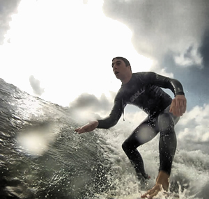

about me
I'm Rich, I've been developing websites for the past 7 years, building web applications and websites for companies all over the world.
I am currently working for the Met Office, working as a Senior Software Developer focusing on front-end development. For the past 3 years leading and developing Flex applications using TDD/BDD, but more recently transitioning to Dojo to build web applications for our customers.
To keep up-to-date with current web trends and increase my commercial experience, I have freelanced for the past 3 years working with numerous clients throughout the UK (examples below). Due to time constraints and the desire to focus on paid-employment I am no longer taking on new freelance work and have been winding-down this work over the past 6 months.
My passion is to make user-centric websites - what users need, how they want to interact with it, and what I can do to provide the best possible experience.
My Skills
me, outside work
To balance out a week of sitting at my desk, I love spending my free time outdoors. Surfing seems to take priority over everything, but if there's no surf I'll probably be out cycling, running, or generally taking in some of the best of the Devonshire air!